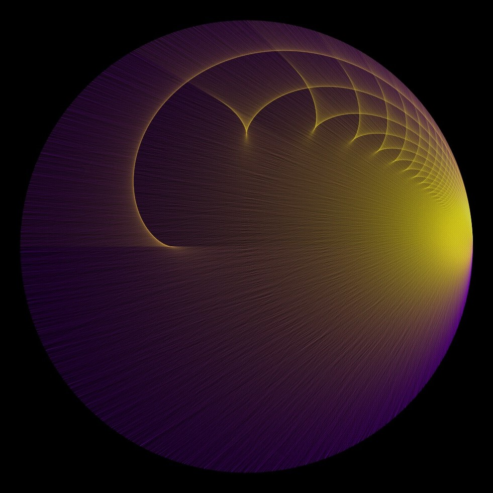

As far as I'm aware, this is not a super well-known game. I first learned of it from Ian Stewart's ``Professor Stewart's Hoard of Mathematical Treasures.''
If a player ever has no legal moves left, they lose.
e.g. \( 98 (A) \rightarrow 49 (B) \rightarrow 7(A) \rightarrow 77 (B) \rightarrow 11(A) \rightarrow 55(B) \rightarrow 1(A) \rightarrow 97(B) \)
In the above example game, Alice loses (from a rather unfortunate starting choice) because she has no legal moves remaining (97 and 1, the only valid factors/multiples of 97, have both been used).
This game can be understood to take place a on a graph whose vertices are the whole numbers from 1 to 100 and whose edges are between \(x, y\) where \(x |y\) or \(y|x\). Some visualizations of this graph can be quite pretty. One way of rendering is to place vertex \(k\) at the point \((\cos(2\pi k / 100), \sin(2\pi k / 100))\). Doing so gives the following image.
If we change the upper bound \(n\) to something much larger, we see a finer version of the previous image. This particular one uses directed edges from factors to their multiples colored yellow and fading to a deep purple (purely for aesthetic reasons).

The golden colored caustics in this image appear to correspond to certain epicycloids.
We can immediately observe that (at least for \(n\) not small) whoever first says 1 loses the game, as the other can simply choose a prime larger than \(n/2\).
One interesting remark is that the addition of the third rule is to prevent the game from being completely trivial. If we didn't have this restriction, then Alice need only pick a prime greater than 50 to immediately win. Such a choice would force Bob to pick 1 as the only valid move, at which point Alice can choose a different prime greater than 50, ending the game.
Even with this restriction, however, Alice still has a winning strategy. It turns out that Alice can pick either 58 or 62 to win, and interestingly, the presence of both these initial options is crucial to the success of her strategy. The key idea is that Alice would like to force Bob to say either 29 or 31. Let's take a look at what happens.
\(62(A) \rightarrow 2(B) \rightarrow 58(A) \rightarrow 29(B)\)
\(62(A) \rightarrow 31(B)\)
\(58(A) \rightarrow 2(B) \rightarrow 62(A) \rightarrow 31(B)\)
\(58(A) \rightarrow 29(B)\)
Because 58 and 62 are semiprimes greater than 50, Bob only ever has three legal moves. Since Bob will never say 1 as long as another choice is available, he must choose a proper divisor. What is special about 29 and 31 is that they are primes strictly between a quarter and a third of 100. In other words, 58 and 62 are even semiprimes strictly between \(n/2\) and \(2n/3\). Why is this important?
\(62(A) \rightarrow 2(B) \rightarrow 58(A) \rightarrow 29(B) \rightarrow 87(A) \rightarrow 3(B) \rightarrow 51(A) \rightarrow 17(B) \rightarrow 85(A) \rightarrow 5(B) \rightarrow 55(A) \rightarrow 11(B) \rightarrow 77(A) \rightarrow 7(B) \rightarrow 91(A) \rightarrow 13(B) \rightarrow 65(A) \rightarrow 1(B)\)
Being greater than half of 100 is important because it forces Bob to always have to choose a factor of Alice's choice. Any multiple is immediately greater than 100. The significance of being under two thirds of 100 is that Alice is able to triple either 29 or 31, forcing Bob to say 3. Once Bob says 3, Alice has a forcing sequence of large semiprimes which will eventually exhaust all of Bob's prime factors. This nice set of semiprimes (55, 77, 91, 65) collectively (sort of pairwise cyclically) share 4 distinct prime factors, which Alice can eliminate from Bob's choices one by one.
Since this is a (finite) combinatorial game, the game must end in a win for Alice or Bob. In other words, each move must be objectively winning for one player. What we've seen is that the initial moves 58 and 62 are winning for Alice. It is not hard to show that the initial moves 2, 98, and any even semiprime greater than 62 are losing for her. What about other opening moves?
Of particular interest to me is what other winning strategies are there for Alice?
If we change \(n\) to 101, the game should not meaningfully change. In fact, the only way 101 affects gameplay at all is that it gives the winning player one additional choices to end the game. For other values of \(n\), however, it is plausible that new strategies may appear or old strategies disappear.
Consider \(n = 60\). Alice still has a winning strategy that is structurally similar to the one we discuss above.
\(34(A) \rightarrow 2(B) \rightarrow 38(A) \rightarrow 19(B) \rightarrow 57(A) \rightarrow 3(B) \rightarrow 33(A) \rightarrow 11(B) \rightarrow 55(A) \rightarrow 5(B) \rightarrow 35(A) \rightarrow 7(B) \rightarrow 49(A) \rightarrow 1(B)\)
Just like the case where \(n = 100\), when \(n = 60\), there are two even semiprimes between \(n/2\) and \(2n/3\). That Alice can use to eventually force Bob to say 3. This again allows her to make use of a sequence of large semiprimes. What makes this strategy slightly different is the fact that she can end the game by forcing Bob to say 7 giving her 49, which happens to be the square of a prime greater than \(n/2\). No such number exists in the case \(n = 100\).
Consider \(n = 80\). Now, there is only one even semiprime between \(n/2\) and \(2n/3\), namely 46. If Alice tries to lead with with 46, and Bob says 2, it is not at all clear what Alice should say next. Considering the neighborhing even semiprimes of 46, choosing 38 allows 76 for Bob, and choosing 58 actually loses to 29. In fact, even if Bob says 23 after Alice's opening 46, it's not clear whether Alice has a winning strategy following this that uses large semiprimes. (Note: I could be wrong on this, as I've not thought about this nearly enough to be confident.)
I have put almost no thought into this, but there is maybe potential for something interesting here.